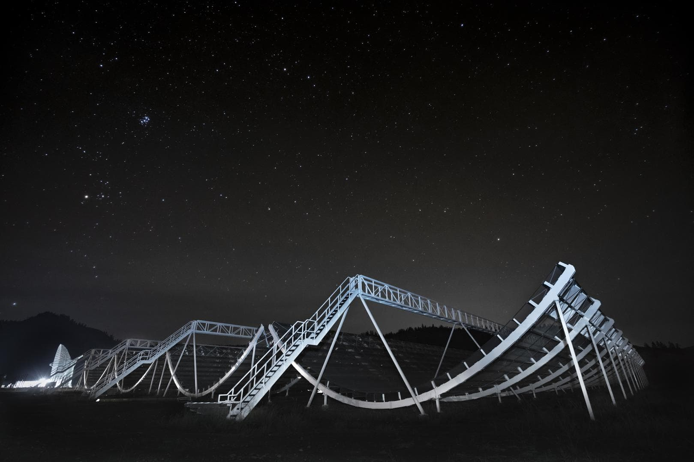
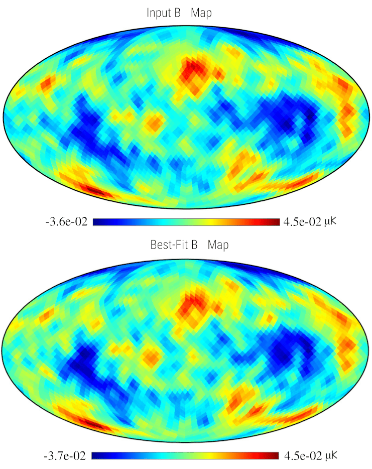
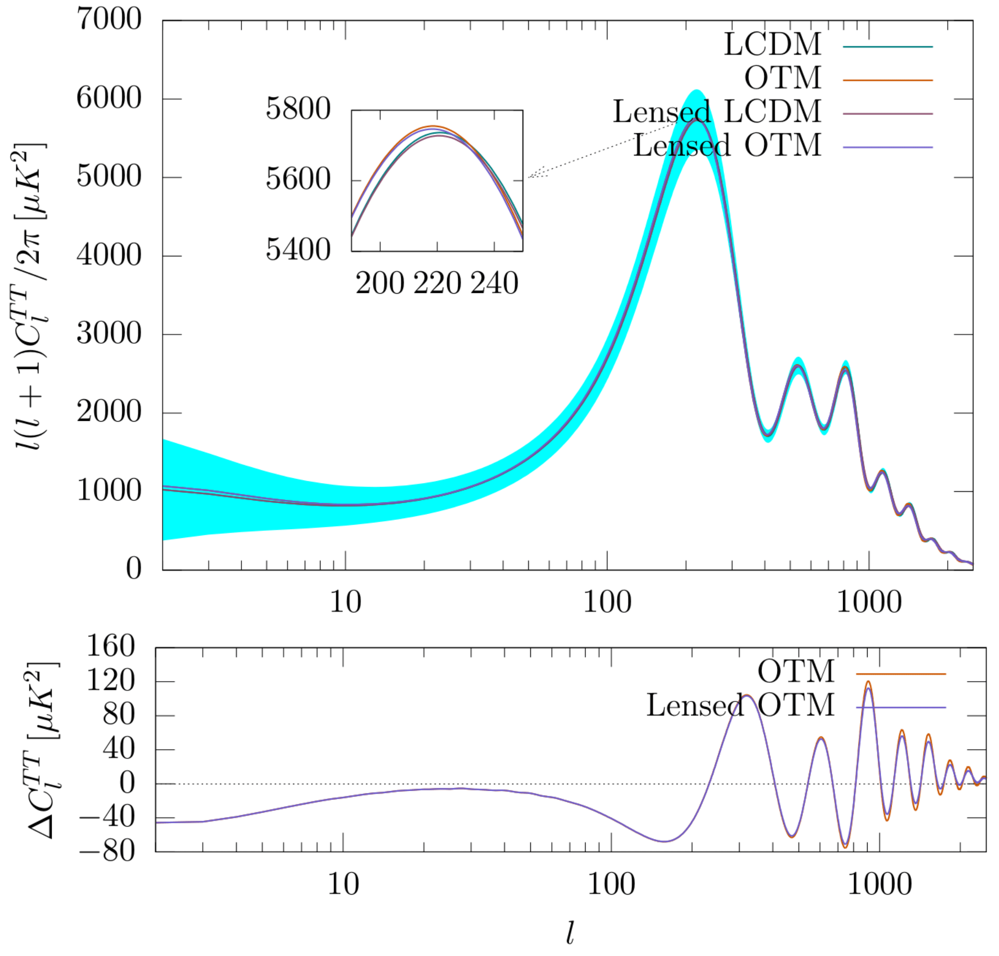

Research
My research encompasses several interconnected areas of cosmology and radio astronomy. Broadly, it focuses on understanding the physics of the Universe through a synergy of theoretical modeling, numerical simulations, and the analysis of large-scale cosmological datasets. I work on 21 cm intensity mapping, CMB temperature and polarization analysis and dark energy. Across these themes, I develop and apply statistical and computational techniques to extract cosmological information, test theoretical models, and connect observations with fundamental physics. Below is a brief summary of my main research directions.
 I work on the interpretation of the first detection of the 21 cm intensity-mapping signal in auto-correlation using data from the Canadian Hydrogen Intensity Mapping Experiment (CHIME), a custom-built drift-scan radio telescope operating between 400–800 MHz. My research focuses on modeling the neutral hydrogen (HI) power spectrum, validating theoretical predictions with the IllustrisTNG suite of hydrodynamical simulations, and developing statistical pipelines to analyze CHIME’s 21cm auto-correlation measurements. By developing and refining these inference pipelines, my work advances 21 cm intensity mapping as a robust and independent cosmological probe capable of complementing traditional galaxy surveys in constraining cosmological and astrophysical parameters. I also work on cross-correlation studies that combine CHIME 21 cm maps with external tracers to further probe the distribution and clustering of neutral hydrogen.
 I also work on foreground mitigation and signal recovery techniques in both 21 cm cosmology and Cosmic Microwave Background (CMB) analyses. A central challenge in these observations is isolating the faint cosmological signal from bright astrophysical foregrounds that are several orders of magnitude stronger. In my 21 cm research, I developed a novel, model-independent Internal Linear Combination (ILC) method in harmonic space, which leverages principal component analysis (PCA) of the 21 cm signal to achieve accurate component separation and angular-power-spectrum estimation. This technique was validated using end-to-end simulations of the Baryon Acoustic Oscillations in Neutral Gas Observations (BINGO) single-dish radio telescope. In parallel, I have applied similar principles to CMB data, where we developed a complete analysis pipeline—from the reliable extraction of the CMB signal and its angular power spectrum to the estimation of cosmological parameters—using a foreground-model–independent Gibbs–ILC framework.
 I also work on applying machine learning techniques to accelerate cosmological parameter inference. In this direction, we developed CosmicANNEstimator,
a neural-network–based framework designed to complement traditional likelihood-based sampling. The method uses two specialized deep neural networks
trained on large suites of simulated datasets to estimate cosmological parameters and their uncertainties with accuracy comparable to standard Bayesian
analyses, but at a fraction of the computational cost. This work demonstrates the potential of machine learning to enable fast, data-driven inference
for next-generation radio and optical surveys.
I also work on applying machine learning techniques to accelerate cosmological parameter inference. In this direction, we developed CosmicANNEstimator,
a neural-network–based framework designed to complement traditional likelihood-based sampling. The method uses two specialized deep neural networks
trained on large suites of simulated datasets to estimate cosmological parameters and their uncertainties with accuracy comparable to standard Bayesian
analyses, but at a fraction of the computational cost. This work demonstrates the potential of machine learning to enable fast, data-driven inference
for next-generation radio and optical surveys.
 The cosmological models exhibiting tracker properties have great significance in the context of dark energy as they can reach the present value of dark energy density from a wide range of initial conditions, thereby alleviating both the fine-tuning and the cosmic coincidence problem. The α-attractors, which are originally discussed in the context of inflation, can exhibit the properties of dark energy as they can behave like cosmological trackers at early times and show the late time behaviour of a cosmological constant. In ( MNRAS 511(2022) ), we investigated the Oscillatory Tracker Model (OTM), which belongs to the family of α-attractor dark energy models. Using current observational data sets like CMB, BAO and Type 1A Supernova data, we constrained the parameters of the OTM model. We also studied the effect of the OTM on the CMB temperature and polarization power spectra, matter power spectrum, growth rate, and fσ8. In another work ( arXiv:2209.07167 ), we extended our perturbative studies to Interacting Dark Energy (IDE) models where the interaction between dark energy and dark matter can give rise to comparable energy densities at the present epoch, thereby alleviating the cosmic coincidence problem. Here, along with forecast analysis, we investigated the impact of both the coupling constant and the equation of state parameter of interacting dark energy models on the CMB temperature power spectrum, matter power spectrum, and fσ8.
 The next-generation CMB satellite missions are expected to provide robust constraints on a wide range of cosmological parameters with unprecedented precision. But these constraints on the parameters could weaken if we do not attribute dark energy to a cosmological constant. In ( arXiv:2209.07167 ), we performed a forecast analysis to test the ability of the
future generation high-sensitive Cosmic Microwave Background (CMB), and Baryon Acoustic Oscillation (BAO) experiments to constrain phenomenological interacting dark energy models. We consider cosmic variance limited future CMB experiment PICO along with BAO information from the DESI experiment to constrain the parameters of the interacting dark sector. For the forecast analysis, we used simulated temperature
and polarization data from PICO within the multipole ranges (ℓ = 2 − 4000). Based on the stability of the cosmological perturbations, we consider two possibilities for the
interaction scenario. With the integration of PICO and DESI missions, we observe a significant improvement in the constraints on several cosmological parameters.
The next-generation CMB satellite missions are expected to provide robust constraints on a wide range of cosmological parameters with unprecedented precision. But these constraints on the parameters could weaken if we do not attribute dark energy to a cosmological constant. In ( arXiv:2209.07167 ), we performed a forecast analysis to test the ability of the
future generation high-sensitive Cosmic Microwave Background (CMB), and Baryon Acoustic Oscillation (BAO) experiments to constrain phenomenological interacting dark energy models. We consider cosmic variance limited future CMB experiment PICO along with BAO information from the DESI experiment to constrain the parameters of the interacting dark sector. For the forecast analysis, we used simulated temperature
and polarization data from PICO within the multipole ranges (ℓ = 2 − 4000). Based on the stability of the cosmological perturbations, we consider two possibilities for the
interaction scenario. With the integration of PICO and DESI missions, we observe a significant improvement in the constraints on several cosmological parameters.
With the emergence of precision cosmology, discrepancies among key cosmological parameters of the model have also emerged. The inconsistency between the locally measured expansion rate of the universe H0 and the one inferred from the CMB observations in the context of the standard ΛCDM model has become a significant problem in modern cosmology. Currently, I am working on phenomenological interacting dark energy models where an interaction between dark energy and dark matter can significantly increase the H0 value. To investigate the H0 tension, we confront the interacting dark energy models with the latest observational probes like CMB, BAO, Type 1A Supernovae data and Hubble parameter data.